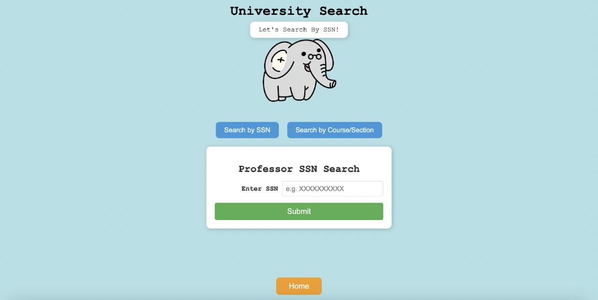
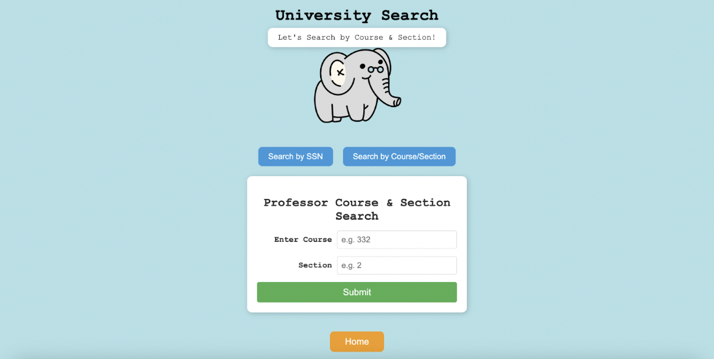
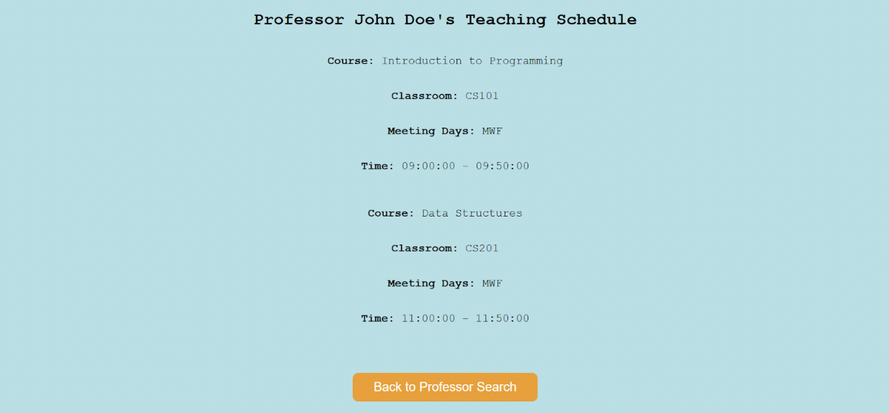
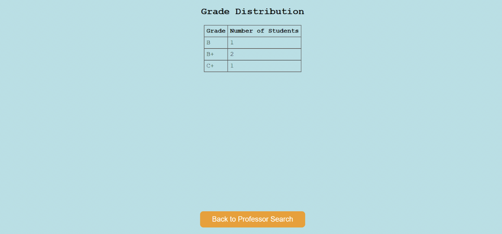
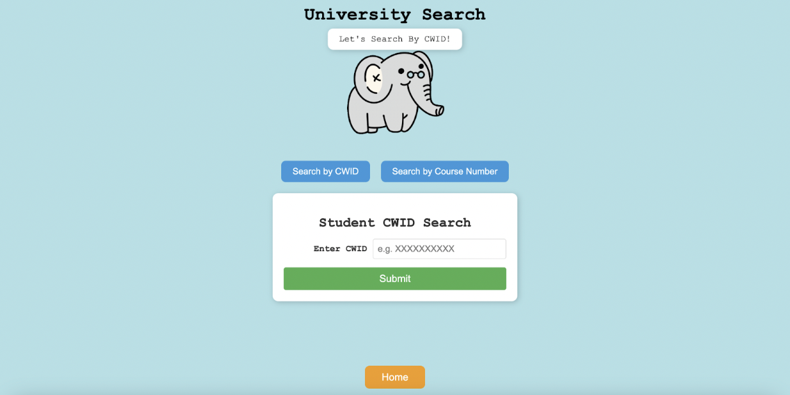
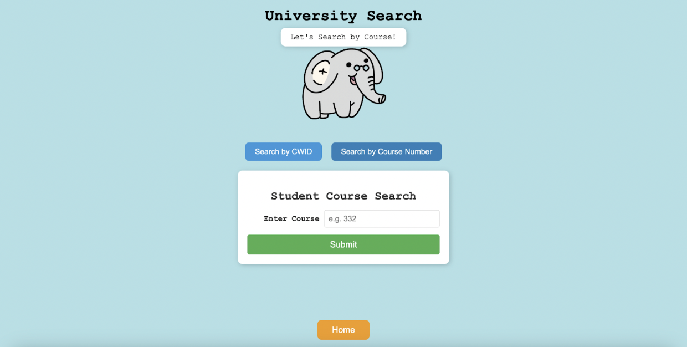
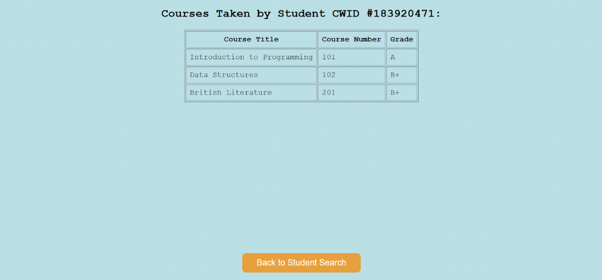

For this project, I collaborated with 2 other teammates to design and create a website that mimics a university database. It has two interfaces for professors and students and outputs tables depending on their input. For example, if a professor searched by their SSN, our website would access our database and display their schedule. It was also hosted on a remote server provided by our university. Here are the screenshots of our interface and their results:
Professor's Interface:
 Professor Results:
 Student's Interface:
 Student's Results:
HTML, CSS, Javascript, php, MySQL (mariaDB)
I currently do not have this project posted! It was hosted by a remote server provided by my university and is inaccesible at the moment.